Papua
Raja Ampat to Triton Bay.

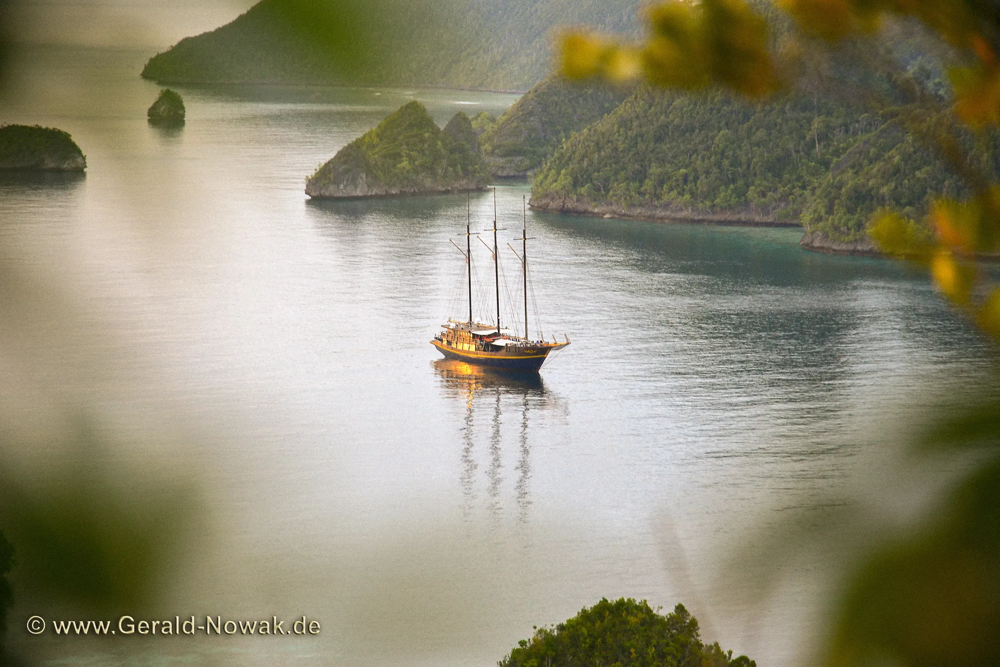
If the Coral Triangle is the richest marine region on the planet, this is the middle of it.
More coral species grow here than anywhere else on earth, roughly three quarters of all known to science, alongside well over a thousand species of reef fish.
Diving:
Manta cleaning stations, pinnacles thick with schooling fish, wobbegongs and walking sharks, soft coral reefs in Triton Bay, and protected areas with the fish back.
Topside:
Hidden lagoons, marine lakes, waterfalls, rock art, birds of paradise and limestone viewpoints.
What makes it different:
The only region on the Australian side of the world's biogeographic divide, and the single richest reef system on the planet.
Seasons we are there:
November through March.
Key Infos
SUBREGIONS
Wetar and the Forgotten Islands.
Raja Ampat, with Waigeo, Batanta, Salawati and Misool. The Fakfak coast. Triton Bay.
book your stay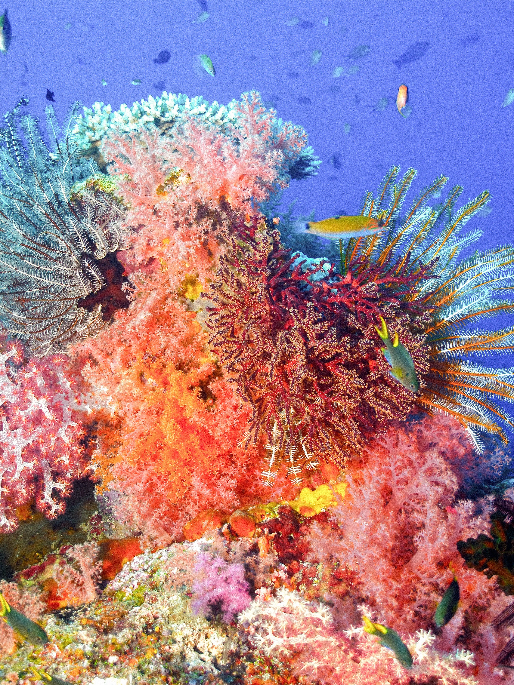
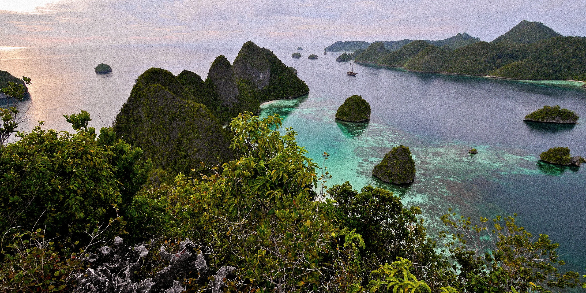
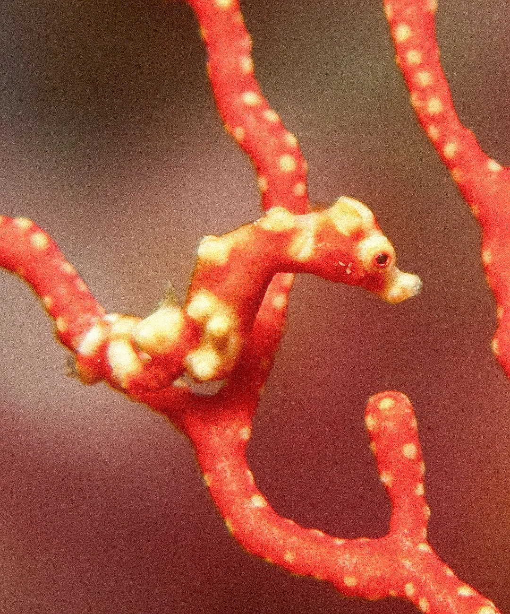
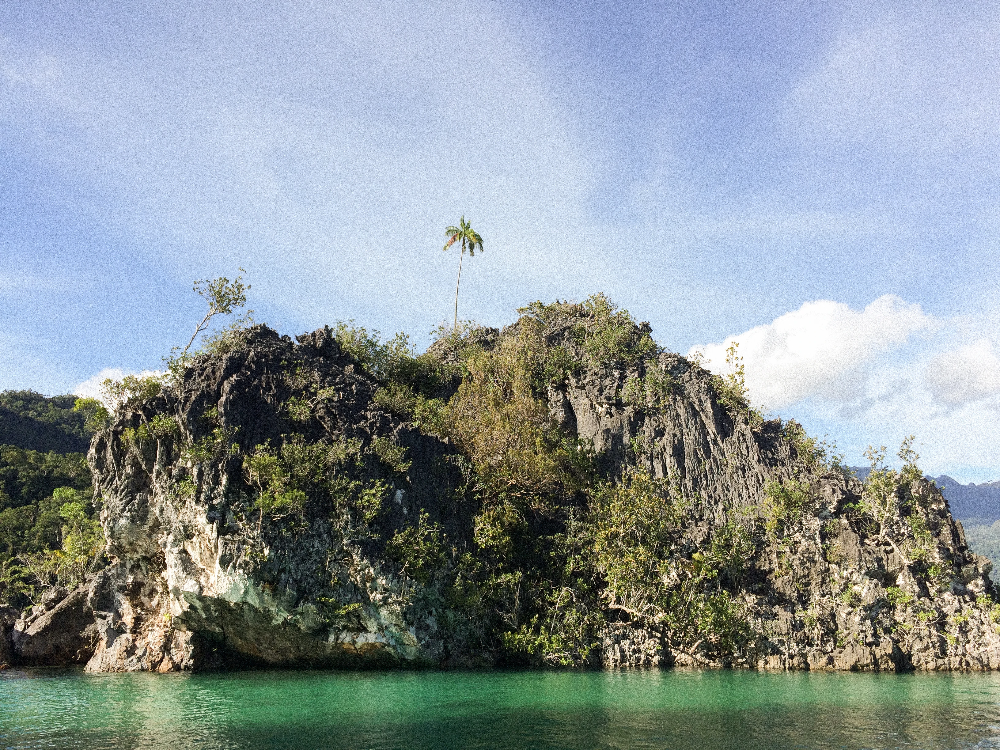
Explore Papua
Routes through Papua.

The Centre of Everything
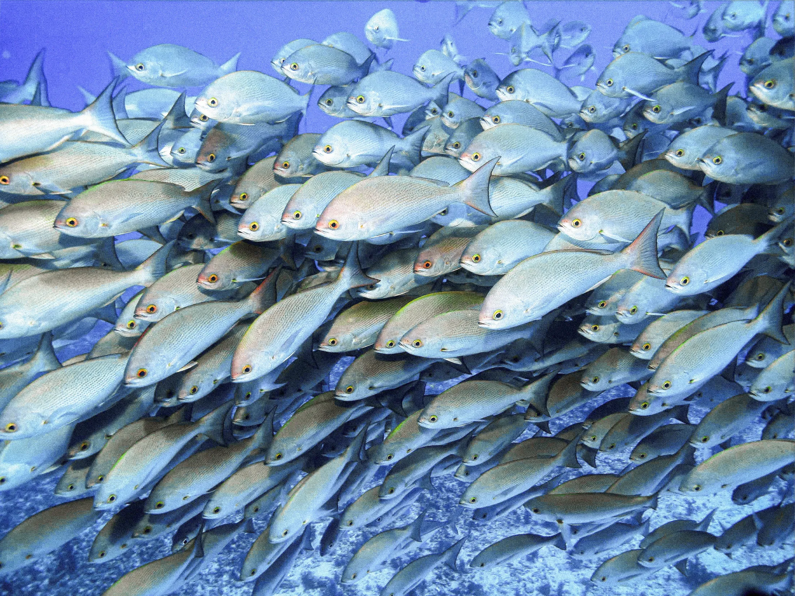
If the Coral Triangle is the richest marine region on the planet, this is the middle of it. More coral species grow here than anywhere else on earth, roughly three quarters of all known to science. The record for the most fish species counted on a single dive belongs to Cape Kri in the Dampier Strait, where 374 were logged in one immersion.
But the real measure of this place is how little of the tree of life is missing from it. Molluscs, from nudibranchs in colours nobody would design to cephalopods that change texture as well as shade, and giant clams a metre across. Echinoderms everywhere: crinoids on every sea fan, sea stars, urchins, sea cucumbers doing the unglamorous work of processing the sand. Crustaceans by the thousand, from cleaning shrimps to punching shrimps. Sponges the size of bathtubs. Segmented worms, flatworms, hydroids, jellyfish, bryozoans.
Tunicates, those small colonial animals that look like plants and are in fact closer relatives of ours than anything else on the reef. It is not simply a place with a lot of life in it. It is where much of that life originated and spread outwards from, which is why biologists describe the Bird's Head as a cradle rather than a collection.
This is the only one of our regions named for the people who live in it. Papua is a collective term for an enormous number of distinct peoples inhabiting the island that European colonisers named New Guinea. Between them they speak over a thousand languages, something close to one in seven of all languages spoken on earth, many of them unrelated to each other and confined to one valley or one island. Along this coast there are traditions of resource management that predate every conservation NGO by centuries, above all sasi, under which a reef or a stretch of forest is closed by customary authority and left to recover before anyone harvests it again. It worked for millennia. The extractive industries now pressing in on Papua could unravel in a few decades what that wisdom protected, and there is a great deal for the rest of us to learn here before that happens.
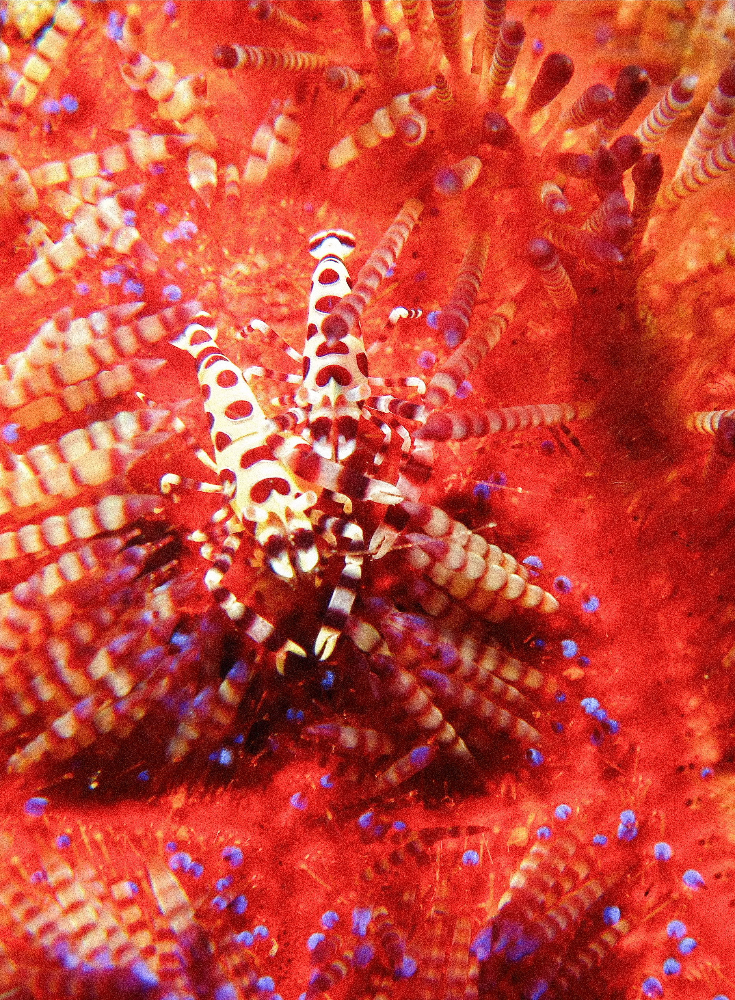
A Piece of
Australia
Everything else we sail is in Wallacea, the zone between two continents. Papua is not. New Guinea sits on the Australian continental shelf and is properly part of Oceania, which is why the animals change entirely: tree kangaroos, cuscus in the canopy, bandicoots, and the birds of paradise, thirty-odd species of them, displaying in the treetops at dawn. It is the second largest island on earth, still carrying some of the last great expanses of primary rainforest anywhere, and one of the few genuine wildernesses left.
book your stay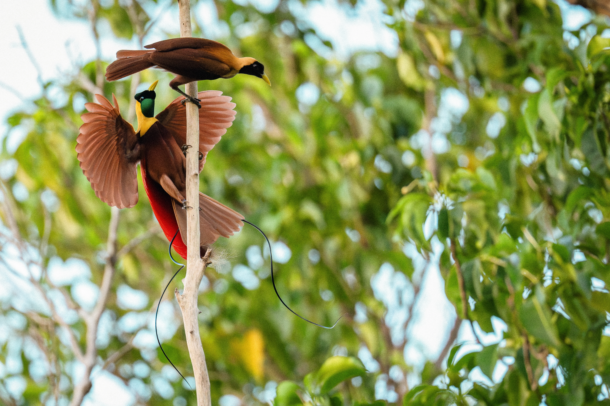
What You
Actually Dive
Pinnacles standing in the tidal flow, where jacks, batfish, barracuda and snapper stack up until the blue disappears behind them. Cleaning stations where reef mantas queue and oceanic mantas rise out of the deep, six metres across. Wobbegongs lying flat under table corals. Walking sharks coming out at night to patrol the shallows on their fins. Hard coral gardens in perfect condition in two metres of water, and soft coral walls in the richer southern bays that are as saturated as any reef in the world. Whale sharks feed under the fishing platforms off Kaimana, Bryde's whales work the bays of Triton Bay, and sperm whales, pilot whales and dolphins turn up on the crossings. Add limestone formations underwater as dramatic as the ones above, and a silverside invasion if you are lucky with the timing.
book your stayAbove the Water
Karst islands scattered across turquoise lagoons, explored by dinghy, kayak or paddleboard, some of which only open up once you are inside them. Marine lakes hidden in the middle of islands. Rivers coming off cliffs straight into the sea. White sand beaches nobody has walked on that week, viewpoints reached by a short sweaty climb, and forest loud enough at dusk to keep people on deck. Birdwatching here is world class, and a dawn walk to watch red birds of paradise display in the canopy is worth the four in the morning start.
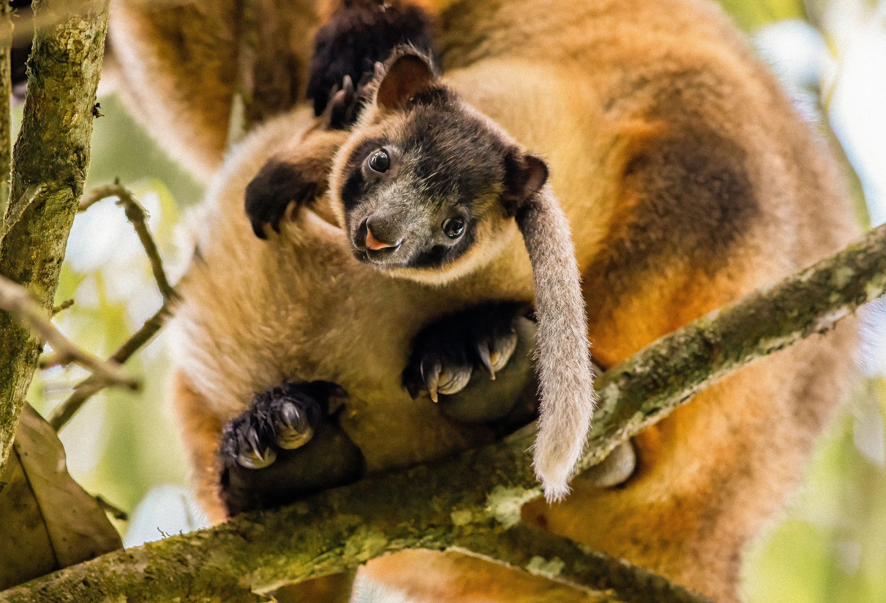
Endemics and the
Small End of the Scale
That much isolation and that much productivity produces animals found here and nowhere else, and most of them are small, which is why macro photographers keep coming back. The walking sharks are the famous exception, a group of bottom-dwelling sharks that stroll across the reef on their fins at night, with separate species on separate stretches of this coastline. Several pygmy seahorses live here, each on its own kind of sea fan or soft coral and most smaller than a fingernail. Flasher wrasses display at dusk in bursts of electric colour, one of them described from Triton Bay and occurring nowhere but those bays. Ghost pipefish hang head down among the crinoids in ornate, robust and halimeda forms. Add harlequin shrimp, Coleman shrimp on fire urchins, bobtail squid, blue ringed octopus, frogfish, gobies and dottybacks still being described, and mandarinfish coming out at dusk. New species are still being found here, which tells you how recently anyone began looking properly.
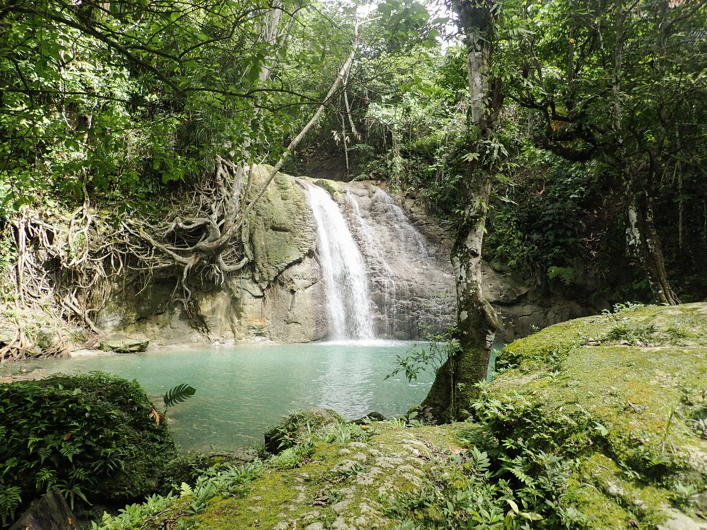
Warm Water That Works
Papua is warm, often 29 or 30 degrees, and wetsuits here are a formality. What makes that remarkable is that these reefs have so far come through the bleaching events that have flattened coral elsewhere in the world. Constant water movement and deep water upwelling keep temperatures from settling into the stagnant heat that kills coral, and some of these corals appear to tolerate warmth that would finish their relatives in other oceans. For anyone who has watched reefs decline elsewhere, diving here is a different experience.
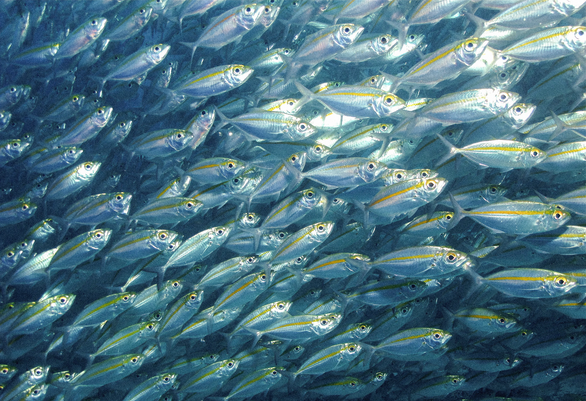
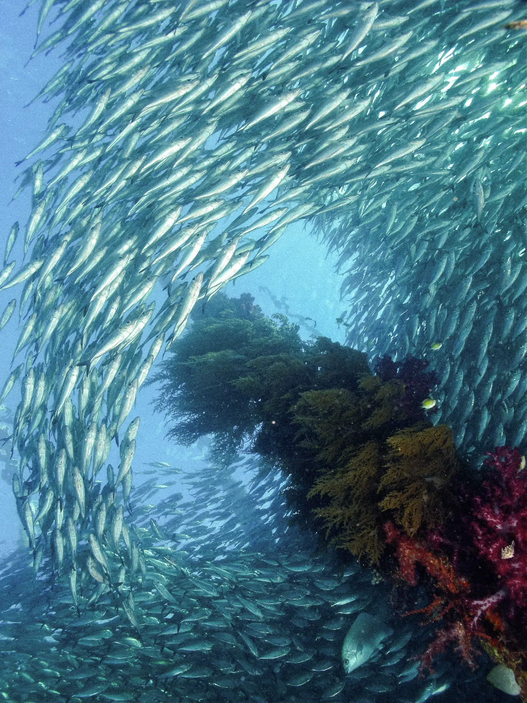
The Recovery
Twenty years ago much of this was being fished hard, sharks included. Local communities, working with conservation organisations, closed large areas and began patrolling them themselves. The results are measurable and visible: several times the fish biomass inside the protected zones, sharks back in numbers, manta populations growing rather than collapsing. Crossing from an unprotected reef onto a protected one is something you notice within a single dive, and it means you are diving a recovery rather than a decline.
Explore other regions
Five ways.
One very big sea.


Ready for your next descent?
Sixteen ways into Indonesia.
And an entire world below the surface.